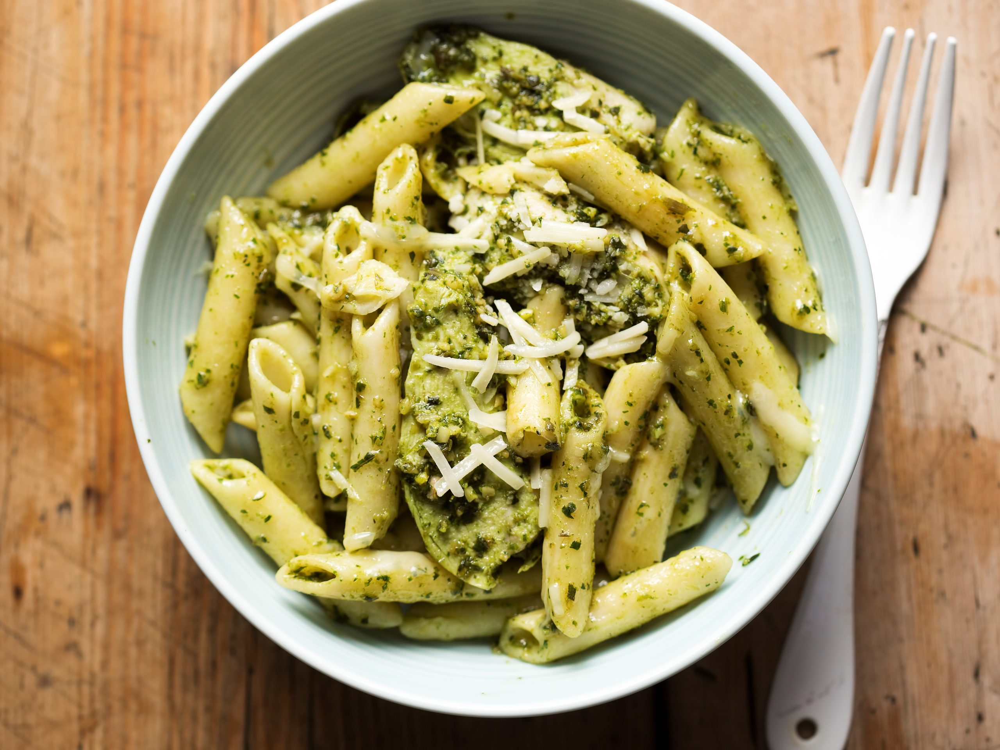

Pates au pesto!

Description
Le pesto alla Genovese est l’une des sauces les plus emblématiques de la cuisine italienne, née à Gênes en Ligurie. Cette préparation froide et crue met en valeur le basilic frais, dont les arômes intenses se marient à la douceur des pignons de pin, à la puissance umami du parmesan et du pecorino, à l’ail discret et à une excellente huile d’olive extra vierge. Traditionnellement réalisé au mortier (pestello) pour préserver la texture granuleuse et libérer les huiles essentielles sans oxydation, le pesto authentique évite le mixeur violent qui noircit le basilic et altère les saveurs. C’est une sauce d’été par excellence, vibrante de vert et de fraîcheur, qui incarne la simplicité raffinée de la gastronomie méditerranéenne.
Servies avec des pâtes (idéalement des trenette, trofie, linguine ou spaghetti), ces pâtes au pesto sont un plat rapide, équilibré et convivial. On allonge légèrement la sauce avec de l’eau de cuisson des pâtes pour qu’elle enrobe parfaitement chaque bouchée sans être trop épaisse. Souvent saupoudrées de parmesan supplémentaire et parfois agrémentées de quelques pignons grillés ou de basilic frais, elles offrent un contraste parfait entre le crémeux filant du fromage et la vivacité herbacée. C’est un classique indémodable qui sent bon l’Italie, parfait pour un déjeuner en terrasse ou un dîner improvisé.
Ingrédients
- 400 g de pâtes (spaghetti, linguine, trofie ou trenette de préférence)
- 50–60 g de feuilles de basilic frais (idéalement basilic à petites feuilles genovese DOP, bien lavé et séché)
- 30–40 g de pignons de pin (légèrement grillés pour plus de goût, facultatif)
- 1 petite gousse d’ail (ou ½ si vous préférez plus doux)
- 50 g de parmesan (Parmigiano Reggiano) râpé finement
- 20–30 g de pecorino romano râpé (ou tout parmesan si vous n’en avez pas)
- 80–100 ml d’huile d’olive extra vierge de qualité (légère et fruitée)
- Sel gros (pour le pesto et l’eau des pâtes)
- Poivre (facultatif, très peu)
Etapes de préparation
- Lavez soigneusement les feuilles de basilic à l’eau froide puis séchez-les délicatement avec un torchon propre ou un essuie-tout.
- Épluchez et dégermez la gousse d’ail pour en atténuer le goût trop fort.
- Dans un mortier (ou un mixeur à vitesse très basse pour éviter de chauffer), écrasez d’abord l’ail avec une pincée de gros sel jusqu’à obtenir une pâte.
- Ajoutez les pignons de pin et pilez-les grossièrement pour les réduire en miettes.
- Incorporez les feuilles de basilic par petites poignées, en les écrasant doucement avec des mouvements circulaires pour en extraire l’huile essentielle sans les déchirer trop finement.
- Ajoutez progressivement le parmesan et le pecorino râpés, en continuant à piler pour bien mélanger.
- Versez l’huile d’olive en filet tout en remuant, jusqu’à obtenir une sauce onctueuse mais encore un peu granuleuse (texture typique du pesto traditionnel).
- Goûtez et rectifiez l’assaisonnement en sel si nécessaire (le fromage est déjà salé).
- Portez une grande casserole d’eau salée à gros bouillons (environ 10 g de sel par litre).
- Plongez les pâtes et cuisez-les al dente selon le temps indiqué sur le paquet (généralement 1–2 minutes de moins pour qu’elles finissent de cuire dans la sauce).
- Prélevez une petite louche d’eau de cuisson des pâtes avant de les égoutter.
- Dans un grand saladier ou la casserole hors du feu, mélangez le pesto avec 4–5 cuillères à soupe d’eau de cuisson chaude pour le détendre et le rendre crémeux.
- Ajoutez les pâtes égouttées dans le saladier et mélangez rapidement et énergiquement pour bien enrober chaque pâte de sauce.
- Servez immédiatement, saupoudré d’un peu de parmesan râpé supplémentaire et éventuellement de quelques pignons grillés et feuilles de basilic frais.
Home